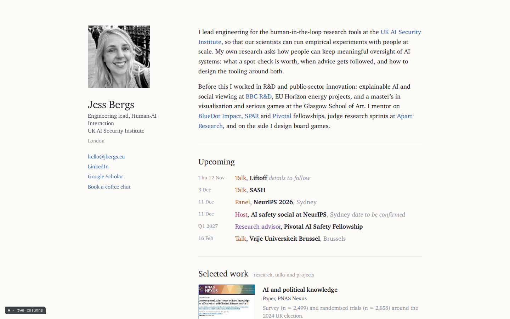
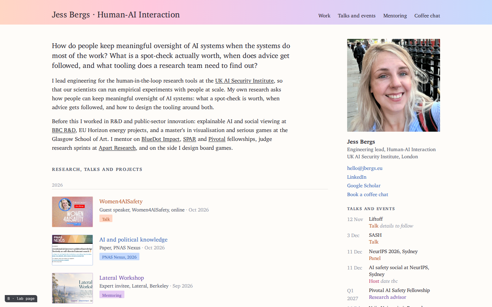
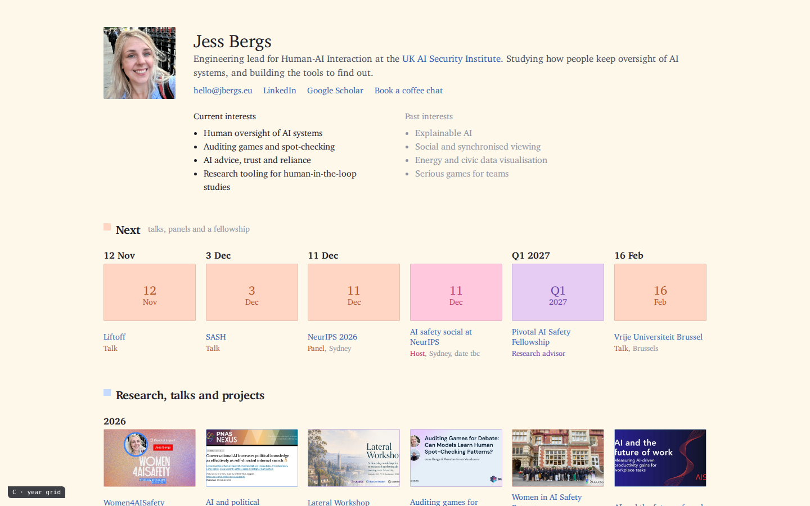
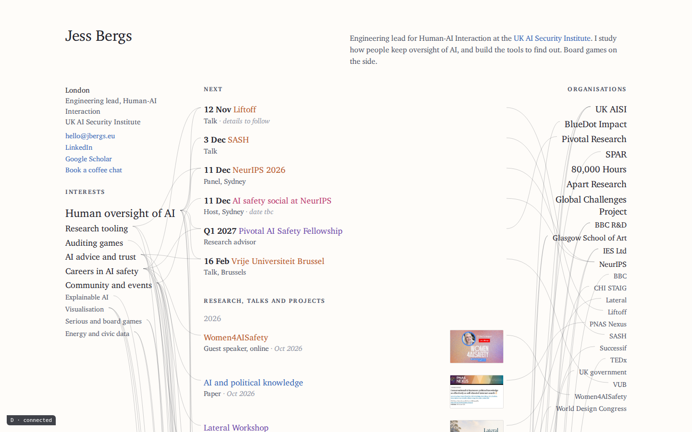
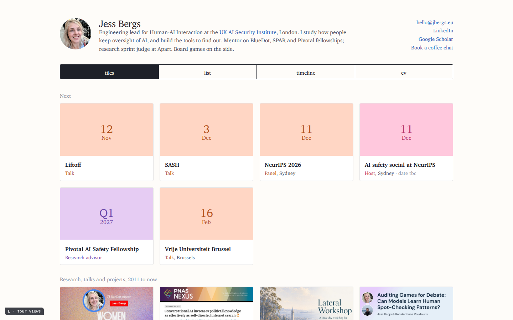

A · Two columns
After kjfeng.me. Sticky identity on the left, prose bio, "Upcoming" as a dated list straight under it, six selected works as a thumbnail list, dated updates, mentoring and service.
Five pages, each anchored in a real PhD, postdoc or professor homepage from the reference set, with Jess's content and the site's own ink and type. Upcoming events are on the first screen in all five. Open a page; the phone and full-page renders are linked under each.

After kjfeng.me. Sticky identity on the left, prose bio, "Upcoming" as a dated list straight under it, six selected works as a thumbnail list, dated updates, mentoring and service.

After Michael Bernstein's page. A title band, research questions as the opening, the whole record down the left by year, and a right column that holds everything about now: photo, contact, talks and events, mentoring, service, coffee chats.

After Pierre Dragicevic and Geoffrey Litt. The tiles stay but small and six across, with the year above the first tile of each year; what is next is the first row, dated the same way; older work sits under an archive band. Current and past interests up top.

After Marian Dörk. Interests on the left sized by weight, the record in the middle with next things first, organisations on the right, and thin curves joining each entry to both. Hover an interest or an organisation to keep only its lines.

After Kim Albrecht. One record, a switch: tiles (the current grid, kept), list, timeline, cv. What is next comes first in every view.